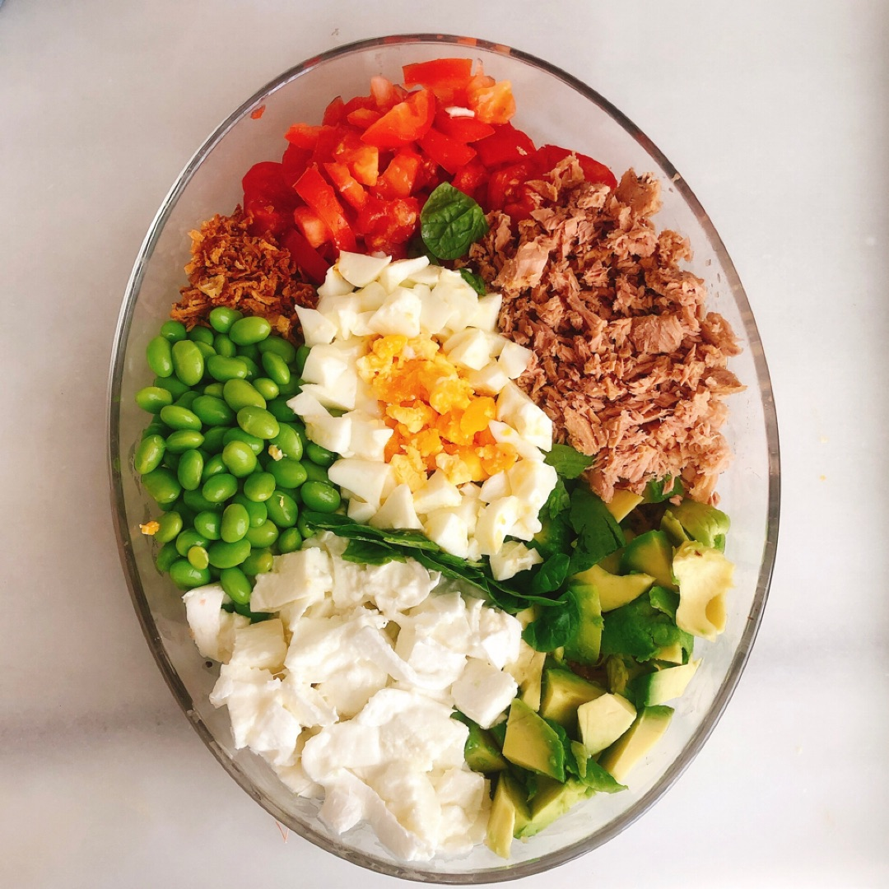

Ensalada Colorida

Ingredientes (2-3 porciones)
- 200 g de rúcula o mezcla de hojas
- 1 taza de tomate cherry cortados a la mitad
- 1 remolacha pequeña, cocida y cortada en cubos
- 1/2 taza de choclo (maíz) cocido
- 1 huevo duro
- 1/2 pimiento (morrón) en tiras
- 30 g de nueces troceadas
- Aceite de oliva, sal, pimienta y vinagre balsámico al gusto
Preparación
- Corta y prepara todos los ingredientes.
- En un bowl grande mezcla la rúcula, tomates, remolacha, choclo y pimiento.
- Añade las nueces y el huevo partido por la mitad.
- Aliña con aceite, vinagre, sal y pimienta justo antes de servir.